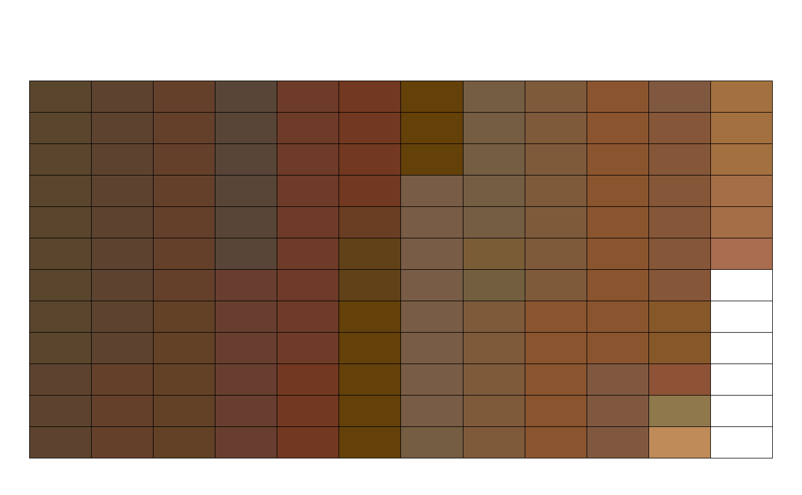
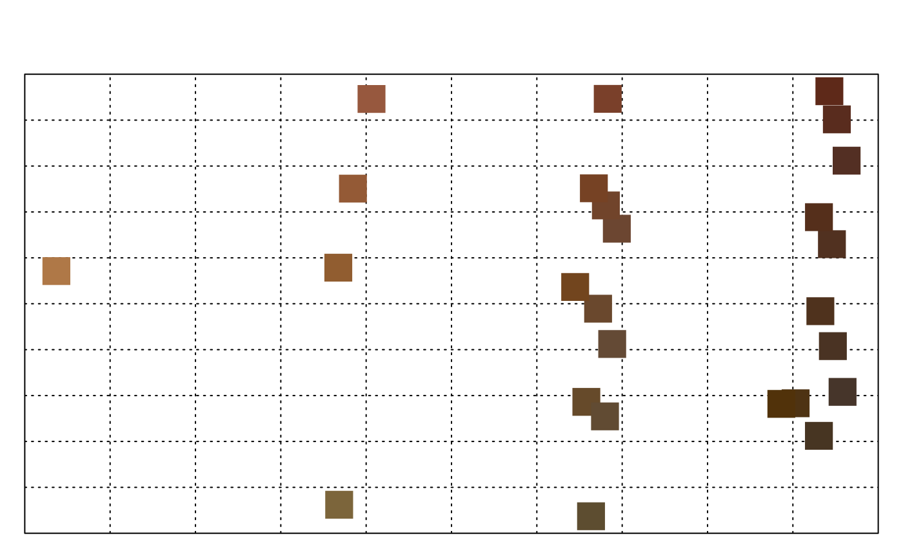

previewColors.RdPreview colors as a grid arranged according to CIE2000 distances.
previewColors(cols, method='grid', col.order=NULL, nrow=ceiling(sqrt(length(cols))), ncol=nrow, border.col='black', pt.cex=2)
| cols | vector of R colors |
|---|---|
| method | either "grid", "MDS", or "manual", see details |
| col.order | integer vector used to order colors |
| nrow | number of rows used by "grid" method |
| ncol | number of columns used by "grid" method |
| border.col | border color used by "grid" method |
| pt.cex | point scaling factor used by "MDS" method |
Color sorting is based on CIE2000 distances as calcuated by farver::compare_colour(). The "grid" method arranges colors in a rectangular grid with ordering based on divisive heirarchical clustering of the pair-wise distances. Unique colors are used when cols contains more than 5,000 colors.
The "MDS" method arranges unique colors via classical multidimensional scaling (principal coordinates) via cmdscale().
Colors can be manually arranged by supplying a vector of integers to col.order and setting method='manual'.
# example data data(sp2) # convert into SoilProfileCollection object depths(sp2) <- id ~ top + bottom previewColors(sp2$soil_color)#>previewColors(sp2$soil_color, method = 'MDS', pt.cex = 3)